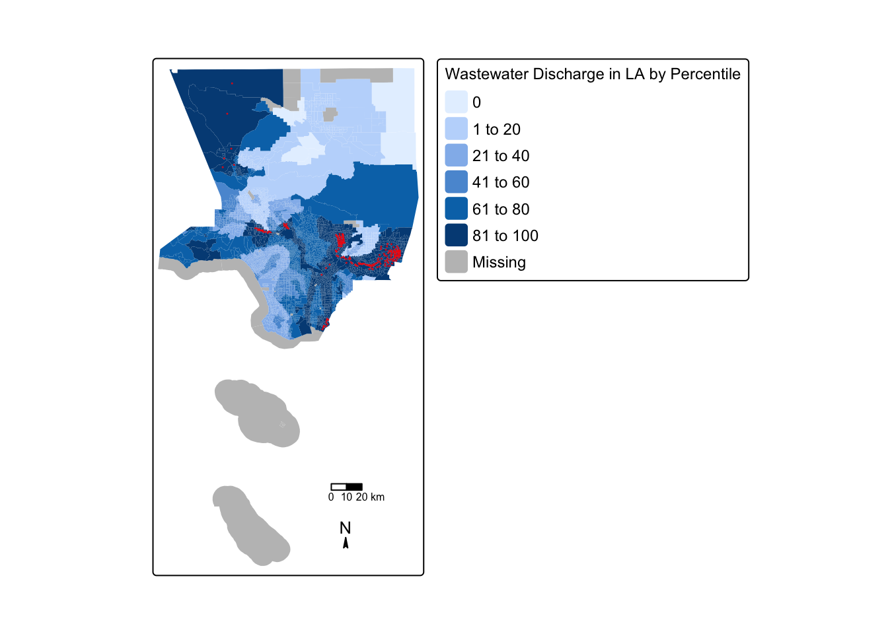
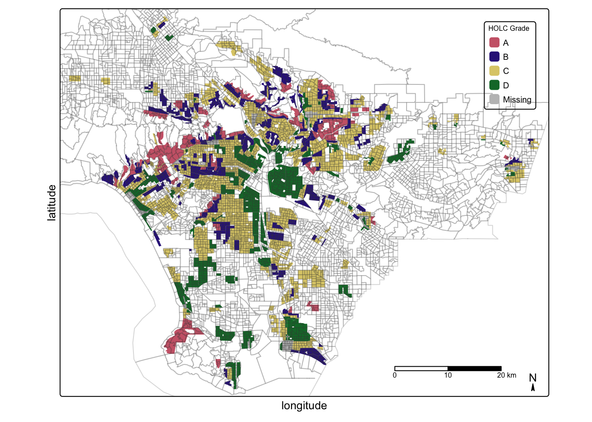
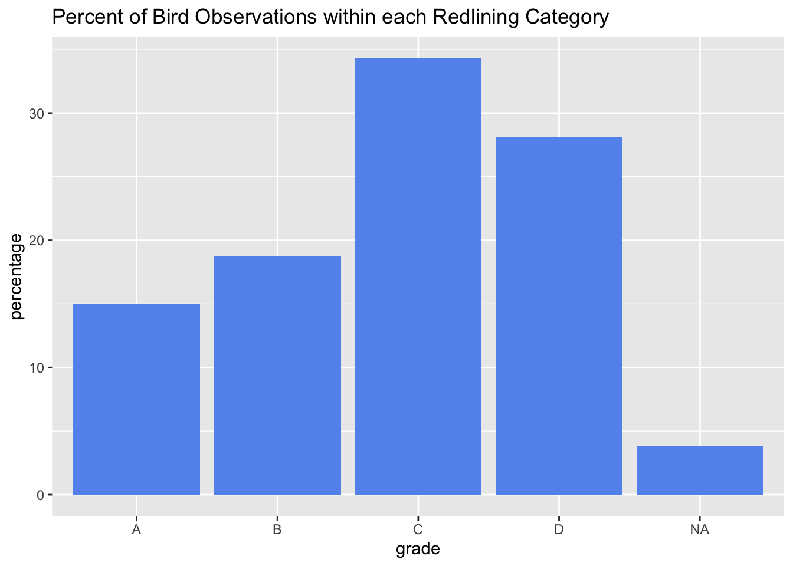

# Load the libraries needed for the analysis
library(tidyverse)
library(sf)
library(terra)
library(dplyr)
library(spData)
library(spDataLarge)
library(ggplot2)
library(tmap)Research Question
What impact on bird biodiversity sampling does historical redlining have in Los Angeles County?
Background
Present-day environmental justice may reflect legacies of injustice in the past. The United States has a long history of racial segregation which is still visible. During the 1930’s the Home Owners’ Loan Corporation (HOLC), as part of the New Deal, rated neighborhoods based on their perceived safety for real estate investment. Their ranking system, (A (green), B (blue), C (yellow), D (red)) was then used to block access to loans for home ownership. Colloquially known as “redlining”, this practice has had widely-documented consequences not only for community wealth, but also health (Gee 2008). Redlined neighborhoods have less greenery and are hotter than other neighborhoods (Nardone, 2021; Hoffman, 2020).
Check out coverage by the New York Times.
A recent study found that redlining has not only affected the environments communities are exposed to, it has also shaped our observations of biodiversity (Ellis-Soto, 2023). Community or citizen science, whereby individuals share observations of species, is generating an enormous volume of data. Ellis-Soto and co-authors found that historically redlining neighborhoods remain the most undersampled areas across 195 US cities. This gap is highly concerning, because conservation decisions are made based on these data.
Check out coverage by EOS.
Also check out coverage on historical redlining and its impact on bird populations in LA by [LAist].
Data
The datasets used for this analysis are listed and described below:
EJScreen
This data is provided by the United States Environmental Protection Agency’s EJScreen: Environmental Justice Screening and Mapping Tool.
According to the US EPA website:
This screening tool and data may be of interest to community residents or other stakeholders as they search for environmental or demographic information. It can also support a wide range of research and policy goals. The public has used EJScreen in many different locations and in many different ways.
EPA is sharing EJScreen with the public:
to be more transparent about how we consider environmental justice in our work
to assist our stakeholders in making informed decisions about pursuing environmental justice and,
to create a common starting point between the agency and the public when looking at issues related to environmental justice.
EJScreen
- EJScreen provides on environmental and demographic information for the US at the Census tract and block group levels. We will be working with block group data that has been downloaded from the EPA site. To understand the associated data columns, we will need to explore the Technical Documentation and column description spreadsheet available. We can also explore the limitations and caveats of the data.
Mapping Inequality (University of Richmond)
A team of researchers, led by the Digital Scholarship Lab at the University of Richmond have digitized maps and information from the HOLC as part of the Mapping Inequality project.
Maps of HOLC grade designations for Los Angeles will be used. Information on the data can be found here (Robert 2023).
Global Biodiversity Information Facility
The Global Biodiversity Information Facility is the largest aggregator of biodiversity observations in the world. Observations typically include a location and date that a species was observed.
Observations of birds from 2021 onward will be used.
Data Analysis
Analysis of EJScreen data within a historical redlining context
We will investigate the legacy of redlining in current environmental (in)justice by exploring and visualize the data. Using these summaries and visualization, we can then draw conclusions on our research question.
Import and explore data
First, we need to load the relevant packages.
Next, we will read in EJScreen data and filter to Los Angeles County.
# Read in geodatabase of EJScreen data at the Census Block Group level
ejscreen <- st_read("data/EJSCREEN_2023_BG_StatePct_with_AS_CNMI_GU_VI.gdb/")
#check class of ejscreen
class(ejscreen)# Filter to Los Angeles County
la_county <- ejscreen %>%
filter(CNTY_NAME %in% c("Los Angeles County"))We can now make a map of wastewater discharge by census block groups. We can indicate which census block groups are above the 95th percentile of national values for wastewater discharge by adding a centroid.
# Pipe in la_county and filter to wastewater discharge column. Define as a variable so we can use later
la_95 <- la_county %>%
filter (P_PWDIS > 95)
# Find the centroid within each Census Block Group above 95 percentile, so you can plot that as points
la_95_centroids <- st_centroid(la_95)
# Create map that shows LA county census block groups by percentile and denote those above the 95 percentile in red.
map1 <- tm_shape(la_county) + #first layer
tm_fill("P_PWDIS", title = "Wastewater Discharge in LA by Percentile") + #use P_PWDIS as variable to map
tm_shape(la_95_centroids) + #second layer
tm_dots(fill = "red", #map data points for la_95_centroids
size = 0.03) +
tm_scale_bar(position=c("right", "bottom"), size = 0.2) + #the rest is formatting
tm_compass(type="arrow", position=c("right", "bottom"), size = 0.5, show.labels = 1) +
tm_layout(legend.outside = FALSE,
legend.stack = "horizontal",
legend.outside.position = "bottom",
legend.outside.size = 0.5,
legend.text.size = 0.75,
legend.title.size=0.75)
# Print the map
map1
We can look at income disparity by finding the percent of census block groups that have:
- less than 5% of the population is considered low income
# Create a subset data with low income percentile (column 19, LOWINCPCT) and create condition for less than 5%
la_lowincpct <- subset(la_county, LOWINCPCT < 0.05)
# Count the total number of rows in la_lowincpct
nrow(la_lowincpct) #403 rows (403 census blocks that have less than 5% of low income pop)[1] 403# Count the total number of rows in la_county
nrow(la_county) #6591 rows (6591 census blocks total in LA)[1] 6591# Divide number of census block groups with less than 5% of low income population by the total number of census block groups and multiply by 100 to get the percentage
(nrow(la_lowincpct) / nrow(la_county)) * 100 [1] 6.114398We can see above that 6.11 percent of census block groups have less than 5% of low income populations.
Next, let’s find the percent of census block groups that are:
- above the 80th percentile for Particulate Matter 2.5 AND
- above the 80th percentile for Superfund proximity
# column 81, P_PM25 is percentile for PM 2.5
# column 89, P_PNPL is percentile for Superfund proximity
# now filter to these specific parameters
PM25_PNPL_80 <- la_county %>%
filter(P_PM25 > 80 & P_PNPL > 80)
#count the number of observations
nrow(PM25_PNPL_80) #there are 1144 census block groups above the 80th percentiles for PM2.5 and PNPL[1] 1144# turn this into a percentage
(nrow(PM25_PNPL_80)/ nrow(la_county)) * 100[1] 17.357In order to interpret historical redlining impacts, we need to start by importing redlining information for Los Angeles.
#use st_read to import redlining information
LA_redlining <- st_read("https://dsl.richmond.edu/panorama/redlining/static/citiesData/CALosAngeles1939/geojson.json") %>%
st_make_valid()Reading layer `geojson' from data source
`https://dsl.richmond.edu/panorama/redlining/static/citiesData/CALosAngeles1939/geojson.json'
using driver `GeoJSON'
Simple feature collection with 417 features and 14 fields
Geometry type: MULTIPOLYGON
Dimension: XY
Bounding box: xmin: -118.6104 ymin: 33.70563 xmax: -117.7028 ymax: 34.30388
Geodetic CRS: WGS 84Let’s make a map of historical redlining boundaries, colored by HOLC grade.
#create the map
map2 <-
tm_shape(LA_redlining) + #first layer
tm_fill("grade", #use holc_grade as the variable to map
title = "HOLC Grade",
col_alpha = 0.2) + #pretty
#tm_graticules(col_alpha = 0.2) + #add graticules
tm_shape(la_county) + #second layer
tm_borders("grey25", col_alpha = 0.2) + #rest is formatting
tm_xlab('longitude', size = 0.8, rotation = 0, space = 0) + #create x/y labels
tm_ylab('latitude', size = 0.8, rotation = 90, space = 0) +
tm_compass(type="arrow", position=c("RIGHT", "BOTTOM"), size = 0.5, show.labels = 1) +
tm_scale_bar(position=c("RIGHT", "BOTTOM"), breaks = c(0, 10, 20), size = 0.5) +
#tm_title("test", position = tm_pos("left", "top")) +
tm_layout(legend.title.size = 0.5,
legend.text.size = 0.6,
legend.position = c("right","top")
)
#print the map
map2
We want to find the number of census block groups that fall within areas with HOLC grades. In order to do so, we must make sure the CRS match.
#check that the CRS match
st_crs(LA_redlining) == st_crs(la_county)[1] FALSEst_crs(LA_redlining) # show ID["EPSG",4326]
st_crs(la_county) # show ID["EPSG",3857]#transform la_county to match crs with LA_redlining
la_county <- st_transform(la_county, crs = 4326)
#check that crs has been transformed
st_crs(la_county) #confirmed, they matchCoordinate Reference System:
User input: EPSG:4326
wkt:
GEOGCRS["WGS 84",
ENSEMBLE["World Geodetic System 1984 ensemble",
MEMBER["World Geodetic System 1984 (Transit)"],
MEMBER["World Geodetic System 1984 (G730)"],
MEMBER["World Geodetic System 1984 (G873)"],
MEMBER["World Geodetic System 1984 (G1150)"],
MEMBER["World Geodetic System 1984 (G1674)"],
MEMBER["World Geodetic System 1984 (G1762)"],
MEMBER["World Geodetic System 1984 (G2139)"],
ELLIPSOID["WGS 84",6378137,298.257223563,
LENGTHUNIT["metre",1]],
ENSEMBLEACCURACY[2.0]],
PRIMEM["Greenwich",0,
ANGLEUNIT["degree",0.0174532925199433]],
CS[ellipsoidal,2],
AXIS["geodetic latitude (Lat)",north,
ORDER[1],
ANGLEUNIT["degree",0.0174532925199433]],
AXIS["geodetic longitude (Lon)",east,
ORDER[2],
ANGLEUNIT["degree",0.0174532925199433]],
USAGE[
SCOPE["Horizontal component of 3D system."],
AREA["World."],
BBOX[-90,-180,90,180]],
ID["EPSG",4326]]# Find the number of census block groups that fall within areas with HOLC grades by counting number of rows
census_holc = st_join(LA_redlining, la_county, join = st_intersects)
nrow(distinct(census_holc)) #6090 distinct rows[1] 6388In order to interpret our data, we need to summarize current conditions based on EJScreen data within historical redlining categories using the mean of the following variables:
- % low income.
- percentile for particulate Matter 2.5.
- percentile for low life expectancy.
- percentile for air toxics cancer risk
#calculate mean by using mean(df$my_column) for variables:
## % low income
mean_lowinc <- mean(census_holc$P_LOWINCPCT)
## % for particulate Matter 2.5
mean_pm25 <- mean(census_holc$P_PM25)
## % for low life expectancy
mean_lowlife <- mean(census_holc$P_LIFEEXPPCT, na.rm=TRUE)
## % for air toxics cancer risk
mean_cancer <- mean(census_holc$P_CANCER, na.rm=TRUE)
#print mean values for variables
mean_lowinc[1] 55.90059mean_pm25[1] 78.07185mean_lowlife[1] 45.33147mean_cancer[1] 52.3011Conclusion
The mean for the particulate matter 2.5 percentile is much higher than the other mean percentiles, which suggests that HOLC neighborhoods may have shorter setback distances from particulate matter emitting sources, such as industrial and transportation lands with hazardous uses. While lower than pm2.5, the other percentiles are still alarmingly high, given that low life expectancy and cancer are severe conditions. The percentiles for low income and cancer neighborhoods are similar and the percentile for low life expectancy is a bit lower.
Investigate the legacy of redlining in biodiversity observations
For bird observations from 2022 that fall within neighborhoods with HOLC grads, we will find the percent of observations within each redlining categories and plot results. In order to do so, we must make sure that the bird observations have the same CRS as redlining data.
Import and explore data
We will start by importing exploring data.
#read in bird data from data folder
bird <- st_read("data/gbif-birds-LA/gbif-birds-LA.shp")
#filter to year 2022
bird_2022 <- bird %>% filter(year == 2022)
#check crs
st_crs(LA_redlining) == st_crs(bird) #True
#intersect birds and LA redlining
bird_red <- st_join(LA_redlining, bird_2022, join = st_intersects)Let’s find the percent of observations within each redlining category.
bird_holc_p <- bird_red %>% #filter into the intersected data defined above
st_drop_geometry() %>% #drop the geometry column
group_by(grade) %>% #group by values in holc_grade column
summarise(percentage = n()/nrow(bird_red) * 100) #summarise these group by percentage
#print
bird_holc_p# A tibble: 5 × 2
grade percentage
<chr> <dbl>
1 A 15.0
2 B 18.8
3 C 34.3
4 D 28.1
5 <NA> 3.80Let’s plot this to visualize the percent of bird observations within each redlining category.
# plot
ggplot(bird_holc_p,
aes(x=grade, y=percentage)) + #label x/y axis
labs(title = "Percent of Bird Observations within each Redlining Category") +
geom_col(fill = "cornflowerblue") #customize labels
Conclusion
These results are surprising, given that the EOP article about birding discusses less available birding data in neighborhoods with historical redlining and its relation to decreased conservation efforts.
The graph shows that there are higher percentage of bird observations in the “C =”definitely declining” category, which could suggest a few possibilities:
More densely populated areas are in the C category and therefore more observations were recorded;
That the urban infrastructure is deteriorating so much that it results in increased green spaces with suitable bird habitat, or;
There is increased gentrification in these areas.
References
Data
United States Environmental Protection Agency’s EJScreen: Environmental Justice Screening and Mapping Tool: https://www.epa.gov/ejscreen/purposes-and-uses-ejscreen
Mapping Inequality (University of Richmond): https://dsl.richmond.edu/panorama/redlining/#loc=5/39.1/-94.58&text=downloads
Global Biodiversity Information Facility: gbif.org
Literature
Gee, G. C. (2008). A multilevel analysis of the relationship between institutional and individual racial discrimination and health status. American journal of public health, 98(Supplement_1), S48-S56.
Nardone, A., Rudolph, K. E., Morello-Frosch, R., & Casey, J. A. (2021). Redlines and greenspace: the relationship between historical redlining and 2010 greenspace across the United States. Environmental health perspectives, 129(1), 017006.
Hoffman, J. S., Shandas, V., & Pendleton, N. (2020). The effects of historical housing policies on resident exposure to intra-urban heat: a study of 108 US urban areas. Climate, 8(1), 12.
Ellis-Soto, D., Chapman, M., & Locke, D. H. (2023). Historical redlining is associated with increasing geographical disparities in bird biodiversity sampling in the United States. Nature Human Behaviour, 1-9.
Robert K. Nelson, LaDale Winling, Richard Marciano, Nathan Connolly, et al., “Mapping Inequality,” American Panorama, ed. Robert K. Nelson and Edward L. Ayers, accessed October 17, 2023, https://dsl.richmond.edu/panorama/redlining/
Citation
BibTeX citation:
@online{chen2023,
author = {Chen, Liane},
title = {Historical {Redlining} and {Bird} {Sampling} {Disparity}},
date = {2023-12-14},
url = {https://lchenhub.github.io/blog/2023-12-14-HOLC redlining and bird biodiversity sampling/},
langid = {en}
}
For attribution, please cite this work as:
Chen, Liane. 2023. “Historical Redlining and Bird Sampling
Disparity.” December 14, 2023. https://lchenhub.github.io/blog/2023-12-14-HOLC
redlining and bird biodiversity sampling/.